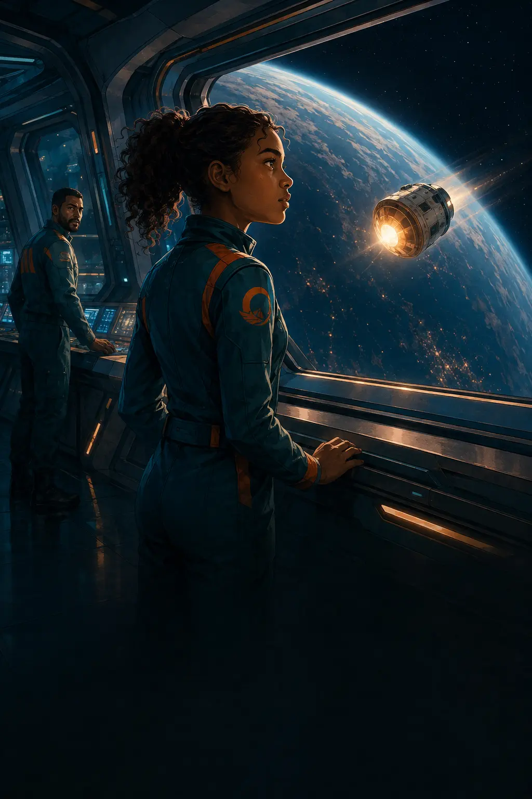
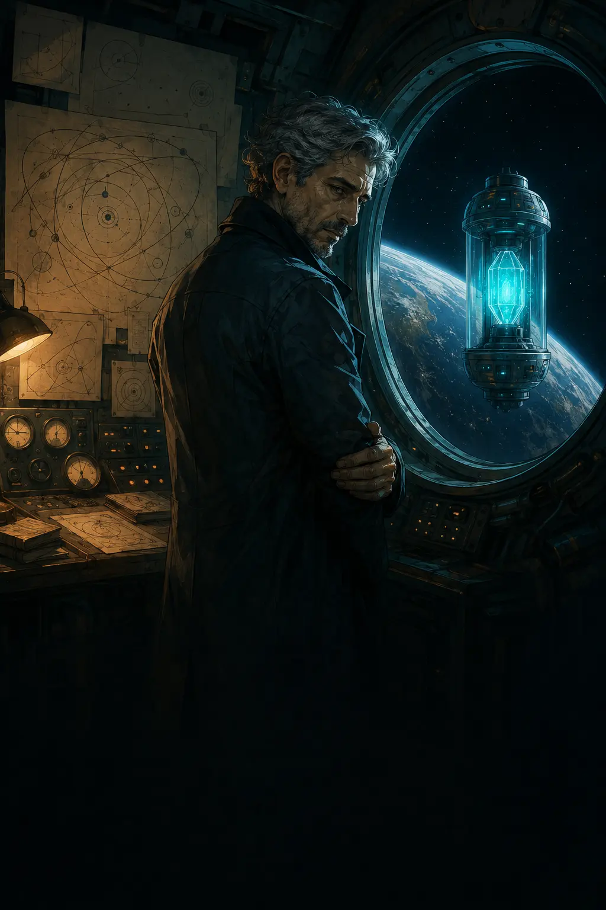

SYRA
Syra
Uma realização
Desenvolvido por
Cláudia Aparecida de PaulaKayque Faiolhe da Silva Alves

LUNAAluna-navegadora
A
AURORA // ECO LOCAL3% do núcleo permanece na Vela-1
Antes de começarmos
Você não precisa saber a resposta.
Observe o que muda, arraste a carta devagar e compare as previsões. A física aparece primeiro como parte do problema; a explicação vem depois da sua decisão.
← opção A
Arraste
opção B →
1 Segure a carta2 Veja o risco3 Solte para decidir
Prólogo · A última respostaVela-1 → Núcleo Aurora
01 / 04
⚡Energia
◎Trajetória
◇Integridade
✦Conhecimento
R
RAVI MOURAComandante da Vela-1
Janela de aproximação
Arraste para preverAs consequências aparecem aqui sem cobrir a carta.
RAVIreage à sua escolha
O que aconteceu
Como Aurora explicaria isso?
Conhecimento reconstruído
Arquivo Aurora

Fim do prólogo